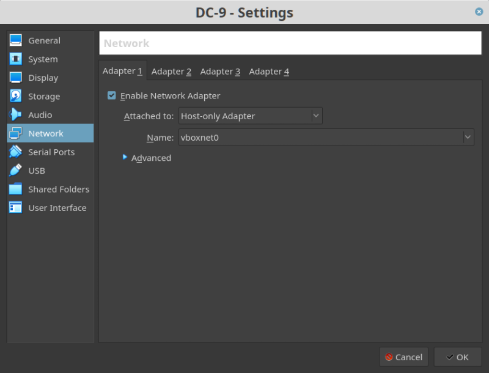
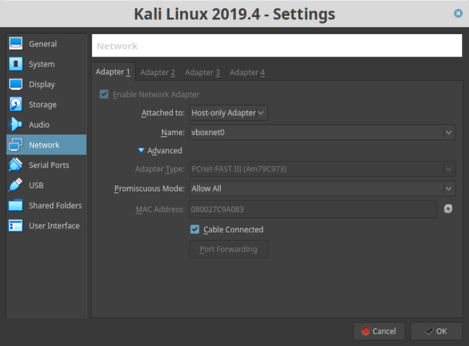
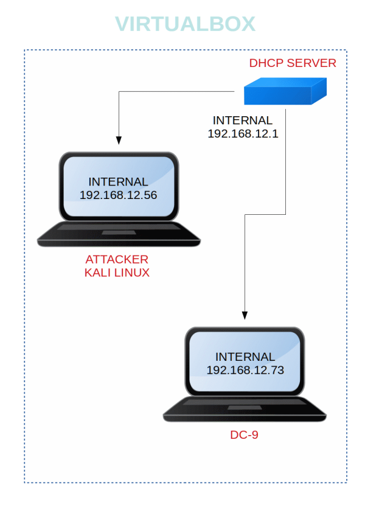

DC-9
▸ DC-9
▸ 1. Scan Network
▸ 2. Finding Services and Ports
▸ 3. Enumerate
▸ 3.1 Capture request with Burp Suite
▸ 3.2 Sqlmap injection
▸ 3.3 Login
▸ 3.4 LFI Test
▸ 4. Explotiation
▸ 4.1 Port Knocking
▸ 4.2 Hydra brute force SSH
▸ 5. Post Exploitation
▸ 5.1 SSH Log in
▸ 6. Privilege Escalation
▸ 7. Catching the flag
Difficulty: Beginner.
Flag: 1 flag.
Learning:
• Nmap Scan
• Browsing HTTP Service
• Connection via SSH
• Enumeration for Sudo Permissions
• Capture the flag
• Download: http://www.five86.com/downloads/DC-9.zip
• Download (Mirror): https://download.vulnhub.com/dc/DC-9.zip
• Download (Torrent): https://download.vulnhub.com/dc/DC-9.zip.torrent
Install the machine on VirtualBox:
1. Download the file and extract it.
2. On Virtualbox choose File->Import Appliance.
3. Select the file “ova”.
4. Accept to import.


Watch your Machine IP.
Output:

Diagram
 Index
Index